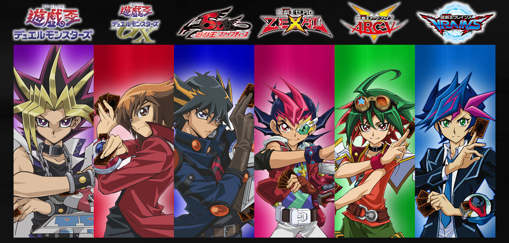

Yu-Gi-Oh! «El rey de los juegos» es un manga creado por el ya fallecido Kazuki Takahashi, que ha
dado lugar a una franquicia, además de múltiples series de anime, películas,
juegos de cartas y numerosos videojuegos. La publicación de este comenzó el 30 de octubre de 1996 y
finalizó el 8 de marzo de 2004 con treinta y ocho volúmenes. Se trata de uno
de los mangas más populares ofrecidos en la revista Weekly Shōnen Jump de Shūeisha. La versión
española del anime mantiene el nombre japonés, pero el anime traducido al español peninsular e
hispanoamericano usa el nombre estadounidense. La primera adaptación a serie de anime
fue por parte de Toei Animation en 1998, la cual siguió fielmente los primeros siete capítulos del
manga. Tan solo se realizaron 27 capítulos que nunca salieron de Japón, ya que no tuvo buena
recepción.
En 2000, una segunda adaptación a anime titulada Yu-Gi-Oh! Duel Monsters fue producida por Studio
Gallop y distribuida por la cadena de televisión TV Tokyo; esta segunda adaptación consiguió más
recepción y popularidad a diferencia de la anterior, llegando a ser traducida a más de
veinte idiomas y vendido en más de sesenta países, versión que fue editada en occidente por 4Kids.
Finalizó el 29 de septiembre de 2004 con doscientos veinticuatro episodios. Una versión
remasterizada destacando ciertos Duelos comenzó a emitirse en Japón en febrero de 2015.
La obra trata sobre la historia de un joven llamado Yūgi Mutō, el cual es un Duelista aficionado que
porta el Puzzle Milenario o Rompecabezas del Milenio, uno de los siete Objetos Milenarios
que se lo había regalado su abuelo. Además, existe un juego de cartas llamadas Duelo de Monstruos,
el cual tiene más preponderancia conforme avanza la historia.
Argumento
Yugi Mutō, un estudiante normal de secundaria, tenía como única amiga a Anzu. Yūgi había recibido por parte de su abuelo Sugoroku Mutō un antiguo artefacto egipcio conocido como el Rompecabezas del Milenio/Puzzle Milenario, uno de los siete Objetos Milenarios, que había encontrado en una de sus expediciones arqueológicas. El Puzzle/Rompecabezas se encontraba dentro de una caja de oro y en múltiples piezas. Después de ocho largos años, a punto de completar tan difícil rompecabezas, lee una pequeña inscripción que poseía el mismo, la cual decía que quien completara ese rompecabezas se le podía conceder un deseo. Yūgi desea «tener amigos», pero a pocos instantes de colocarla, Jōnouchi y Honda roban la pieza. Yūgi se la pide, pero estos se niegan. Más tarde le devuelven la pieza a Yūgi. Una vez que lo había armado tiene como fieles amigos a Jōnouchi y Hiroto. Luego Yūgi es poseído por otra personalidad, que más tarde se descubre que es un espíritu de más de cinco mil años de edad, al cual conocen por el nombre de Yami. (¿Se recupera Yugi ?). La historia continuará mientras que Yūgi y sus amigos se enfrentan a varios contrincantes, para tratar de encontrar las cartas de los Dioses Egipcios, ya que por medio de estas se podrán recuperar los recuerdos perdidos del faraón Atem (la verdadera identidad de Yami) a través de los Duelos de Monstruos que se reflejan en los Juegos de las Sombras (pese a que este concepto no estaba presente del todo en la versión original).